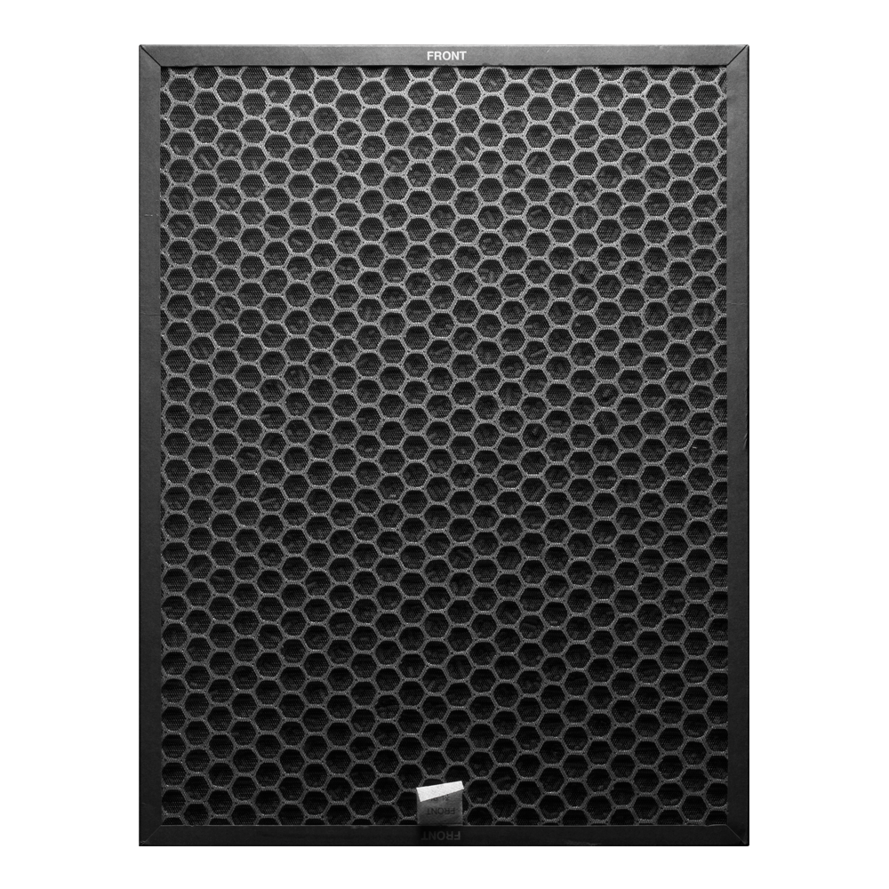
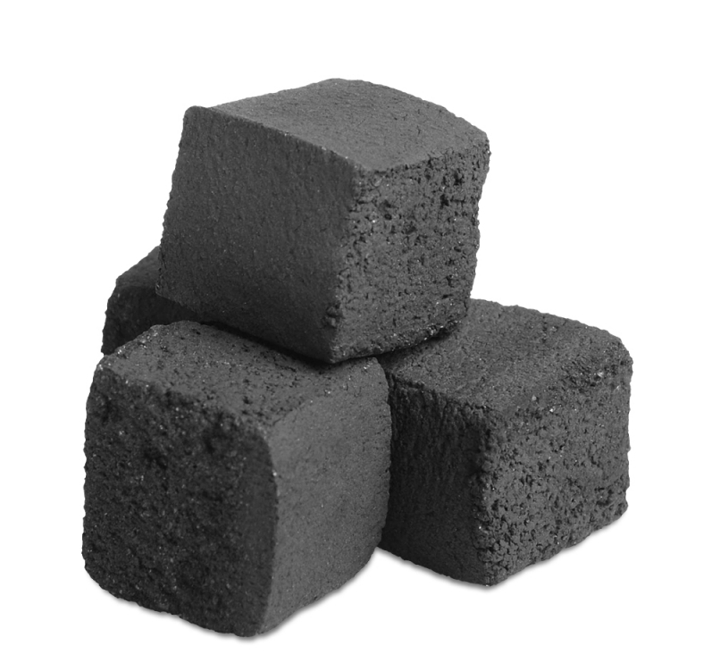

Угольный фильтр Carbon А804
Важное дополнение для эффективного очищения воздуха в вашем доме.
Угольный фильтр
Угольные фильтры BORK нового поколения из скорлупы кокоса имеют структуру сот, что позволяет обеспечить максимальную эффективность очистки воздуха на всей поверхности фильтра. Особый вид угля способен удалять загрязнения из воздуха, газа и жидкостей. Когда различные загрязнения вступают в контакт с активированным углем, составляющие их молекулы задерживаются в крошечных капиллярных каналах на поверхности угля - этот процесс называется адсорбцией. Гранулированный уголь имеет сравнительно большую площадь поверхности. Это делает фильтры нового поколения предпочтительными для ситуаций, когда главная цель - удаление летучих органических соединений.
Гарантия чистоты и свежести воздуха
Фильтр эффективно уничтожает вредные газы и резкие запахи при работе в воздухоочистителе А804 в течение 12 месяцев.